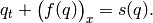
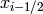
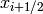
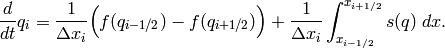
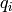
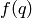
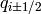
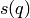

PyBLAW¶
PyBLAW is a lightweight Python framework for solving one-dimensional systems of hyperbolic balance laws of the form

Using PyBLAW¶
To solve a one-dimensional system of hyperbolic balance laws, we integrate the system over a grid cell (finite volume) from  to  and re-arrange to obtain

where  is the cell average of  . As such, we need
to approximate
. As such, we need
to approximate
- the flux  at the cell boundaries , and
- the integral of the source  over the cells;
and evolve the sum these of to obtain the time evolution of the cell
averages. The key to approximating the flux and source terms is being
able to approximate the solution at the cell boundaries and
quadrature points given the cell averages of . This is the
reconstruction problem. So, in order to solve a particular system
of hyperbolic balance laws we need to
- reconstruct the solution at various points (cell boundaries and source quadrature points),
- compute the flux and source terms, and
- evolve the system.
As such, the PyBLAW framework defines base classes to handle/define
- the system,
- the flux,
- the source,
- a reconstructor,
- an evolver,
- a dumper,
- and a solver.
Again, these are only lightweight base classes (although PyBLAW has some predefined classes to help, see below). It is up to you to extend these base classes for your particular problem. Briefly, the
- system class defines system parameters, initial conditions, etc; the
- flux class computes the flux at the cell boundaries given a reconstruction; the
- source class computes the source in each cell given a reconstruction; the
- reconstructor class reconstructs the solution at the cell boundaries and quadrature points given the cell averages of the solution; the
- evolver class evolves the system from one time step to the next;
- dumper class dumps the solution to a file; and the
- solver class glues everything together.
PyBLAW has some predefined classes to save you some time:
- a WENO reconstructor,
- a few Runge-Kutta evolvers,
- an HDF5 dumper, and a
- generic solver.
The Python WENO package PyWENO is a good resource for building your reconstructor.
Once you have defined your system by inheriting and overriding the PyBLAW base classes, you call the Solver’s run method to run the solver.
Check out some examples to learn more about how to use PyBLAW.
API¶
There are a few things to keep in mind:
- each class has an allocate method that gets called by the solver during initialisation;
- each class has a pre_run method that gets called after the initial conditions are computed;
- each class has a debug dictionary and a trace variable to help you debug your solver; and
- some classes are linked together through various instance variables (eg, the flux class has a system variable that points to the system class).
Please see the PyBLAW API page for the detailed API documentation. Again, checking out some examples might be helpful.
Obtaining and installing PyBLAW¶
To install PyBLAW, please download, build, and install from source (there aren’t any pre-built packages).
The latest source distribution is available in either zip or tar format. You can also obtain the source code on GitHub through the PyBLAW project page, and you can clone the project by running:
$ git clone git://github.com/memmett/PyBLAW
Once you have downloaded and unpacked the source package, you can install PyBLAW by simply running:
$ python setup.py install
For more installation options, please see the Python Installing Python Modules document and the setuptools documentation.
Contributing¶
Contributions are welcome! Please send comments, suggestions, and/or patches to the primary author (Matthew Emmett). You will be credited.
If you plan to extend or modify PyBLAW in a more substantial way, please see the PyBLAW project page.